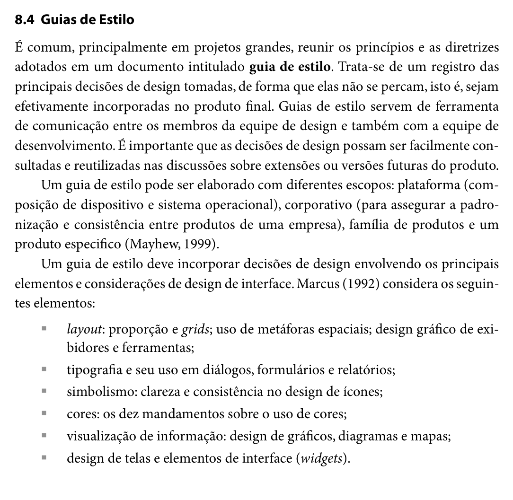

Responsável: Heitor Pinheiro Gonçalves das Chagas — Guia de estilo · Autor dos itens: Heitor Pinheiro Gonçalves das Chagas
Guia de estilo¶
Tabela de contribuição¶
A Tabela 1 registra quem atuou neste artefato.
| Integrante | Contribuição | Artefato / atividade |
|---|---|---|
| Caio Breno de Souza Bezerra | Abertura inicial da página com o esqueleto do artefato | Estrutura |
| Heitor Pinheiro Gonçalves das Chagas | Fundamentação bibliográfica dos itens 15 e 16, obtenção dos trechos do livro e estruturação do guia | Itens de conteúdo |
Tabela 1 — Contribuição neste artefato.
Fonte: elaboração do Grupo 06 (2026).
Introdução¶
Este documento apresenta o Guia de Estilo do Portal do Senado Federal, correspondente aos itens oficiais 15, 16 e 17 da Entrega 3 da disciplina de Interação Humano-Computador [1].
No modelo de ciclo de vida de Engenharia de Usabilidade proposto por Mayhew (1999), adotado pelo Grupo 06 em seu Processo de Design, a fase de Análise de Requisitos tem como um de seus principais produtos a elaboração do guia de estilo. Esse documento sintetiza e operacionaliza as diretrizes, princípios de IHC e metas de usabilidade derivados da análise de tarefas, do perfil de usuário e das possibilidades e limitações técnicas da plataforma, garantindo que as decisões de design sejam mantidas e reflitam no produto final de forma consistente (BARBOSA; SILVA, 2010, p. 109–110, 282).
Itens de conteúdo da disciplina¶
O que é um Guia de Estilo (Item 15)¶
Autor do item: Heitor Pinheiro Gonçalves das Chagas
Segundo Barbosa e Silva (2010, p. 282), é prática comum, sobretudo em projetos de grande escala, reunir os princípios e as diretrizes adotados em um documento formal intitulado guia de estilo. Esse documento atua como o registro central das principais decisões de design concebidas pela equipe, impedindo que se dispersem ao longo do ciclo de vida e assegurando que sejam fielmente incorporadas à interface final.
Além disso, os autores destacam que os guias de estilo desempenham um papel fundamental como ferramenta de comunicação entre os designers de interação, desenvolvedores e mantenedores do sistema, permitindo que soluções consolidadas sejam consultadas e reaproveitadas em extensões e versões futuras.
Conforme apontado por Mayhew (1999), um guia de estilo pode abranger quatro escopos: de plataforma (sistema operacional e hardware), corporativo (padronização entre produtos de uma mesma instituição), família de produtos ou de um produto específico — escopo este adotado neste projeto, focado nas particularidades do Portal do Senado Federal.
A Figura 1 reproduz o trecho da literatura (Seção 8.4, p. 282) que fundamenta a definição e a importância do guia de estilo.
Figura 1 — Definição e escopo de Guias de Estilo na literatura de IHC


Fonte: BARBOSA; SILVA (2010, p. 282), recorte do livro.
Estrutura do Guia de Estilo (Item 16)¶
Autor do item: Heitor Pinheiro Gonçalves das Chagas
Para garantir abrangência e rigor técnico, Barbosa e Silva (2010, p. 283) sintetizam a estrutura clássica proposta por Marcus (1992) e Mayhew (1999) para a composição de guias de estilo. Essa estrutura organiza as decisões de design em seis seções fundamentais:
- Introdução: define o objetivo do guia, sua organização interna, o público-alvo (programadores, gerentes, equipe de suporte), diretrizes de uso tanto na produção quanto na manutenção e procedimentos para mantê-lo atualizado;
- Resultados de análise: registra a descrição do ambiente de trabalho do usuário (condições físicas, contextuais e técnicas de uso identificadas no perfil do usuário e na plataforma);
- Elementos de interface: padroniza a disposição espacial e grid de tela, comportamento de janelas e modais, tipografia institucional, símbolos não tipográficos (ícones e marcas), paleta de cores e animações/transições;
- Elementos de interação: especifica os estilos de interação suportados (menus, busca, links), a justificativa da seleção dos estilos predominantes e aceleradores (teclas de atalho e acessibilidade);
- Elementos de ação: padroniza os mecanismos de preenchimento de campos em formulários, elementos de seleção (dropdowns, checkboxes, rádios) e mecanismos de ativação (botões e acionadores);
- Vocabulário e padrões: estabelece a terminologia oficial e compreensível para os termos de domínio, os tipos de telas para as tarefas comuns e as sequências de diálogos (mensagens de confirmação, avisos de erro e feedback).
Adicionalmente, Mayhew (1999) recomenda explicitar o design rationale (a justificativa de cada decisão), assegurando o rastreamento direto entre os problemas levantados nas etapas anteriores e os elementos de interface projetados.
A Figura 2 ilustra o trecho da literatura (Seção 8.4, p. 283) que estabelece essa divisão estrutural.
Figura 2 — Estrutura de Guia de Estilo segundo Marcus (1992) e Mayhew (1999)

Fonte: BARBOSA; SILVA (2010, p. 283), recorte do livro.
Estrutura¶
A seguir, apresentam-se as decisões de design do Portal do Senado Federal organizadas segundo os seis eixos normativos da literatura (MARCUS, 1992; MAYHEW, 1999; BARBOSA; SILVA, 2010).
1. Introdução¶
1.1 Objetivo do guia de estilo¶
O objetivo deste Guia de Estilo é estabelecer os padrões de interface, diretrizes de usabilidade e convenções de interação para o Portal do Senado Federal. Este documento serve como referência técnica e projetual para a equipe do Grupo 06 durante a elaboração dos protótipos de baixa e alta fidelidade (Etapas 4 a 7), garantindo que as metas de usabilidade definidas na fase de Análise de Requisitos sejam mantidas e que o sistema ofereça uma experiência de uso consistente, acessível e transparente ao cidadão.
1.2 Organização e conteúdo do guia de estilo¶
O guia está estruturado em conformidade com as diretrizes consolidadas de IHC, dividindo-se em: * Resultados de análise: contextualização do ambiente físico, técnico e cognitivo do usuário; * Elementos de interface: normas de grid, janelas, tipografia, iconografia, paleta cromática e animações; * Elementos de interação: estilos de diálogo homem-máquina, critérios de seleção e atalhos de acessibilidade; * Elementos de ação: padrões para preenchimento de formulários, seleção de itens e acionamento de botões; * Vocabulário e padrões: glossário legislativo acessível, padrões estruturais de telas e sequências de feedback; * Correspondência com o site avaliado: demonstração da aderência das decisões à interface real do Senado Federal.
1.3 Público-alvo¶
Este guia destina-se aos seguintes públicos: * Designers de Interação e Avaliadores (Grupo 06): responsáveis por conceber protótipos e inspecionar conformidades; * Desenvolvedores Front-end: responsáveis pela codificação e implementação fiel dos componentes visuais; * Analistas e Mantenedores de Sistemas (Prodasen): equipe técnica responsável pela sustentação de portais públicos legislativos; * Gestores e Conteudistas: responsáveis pela publicação de notícias, pautas e documentos oficiais.
1.4 Como utilizar o guia¶
- Em produção (projeto e desenvolvimento): deve ser consultado obrigatoriamente antes da criação de qualquer novo fluxo, componente ou tela, servindo como especificação normativa para escolha de cores, tamanhos de fonte, espaçamentos e mensagens de erro;
- Em manutenção e avaliação: serve como checklist de referência durante avaliações heurísticas, testes de usabilidade e auditorias de acessibilidade, orientando correções rápidas de divergências visuais e comportamentais.
1.5 Como manter o guia¶
O guia deve ser revisado de forma iterativa ao final de cada ciclo de avaliação com usuários (Etapas 5 e 7). Quaisquer modificações em decisões de design devem ser registradas no histórico de versão do documento, acompanhadas de seu respectivo design rationale (a justificativa da alteração embasada nos dados observados nas avaliações).
2. Resultados de análise¶
2.1 Descrição do ambiente de trabalho do usuário¶
Com base no Perfil do Usuário consolidado na Etapa 2 e na análise das Características da Plataforma, identificou-se que o público do Portal do Senado Federal é diversificado (estudantes, professores, jornalistas, advogados e cidadãos em geral). O ambiente de trabalho típico caracteriza-se por:
- Dispositivos e Resoluções: uso híbrido entre computadores desktop (monitores Full HD 1920×1080 em escritórios ou domicílios) e smartphones (telas de 5 a 6,7 polegadas em trânsito). O layout precisa assegurar legibilidade sem depender de zoom horizontal;
- Condições de Iluminação: variações desde ambientes de escritório bem iluminados até locais externos com reflexos solares ou uso noturno em baixa luminosidade, justificando a presença indispensável de um modo de Alto Contraste;
- Carga Cognitiva e Tarefas: a leitura de documentos legislativos (projetos de lei, emendas e relatórios) exige concentração prolongada. A interface deve minimizar elementos visuais concorrentes ou poluídos, priorizando áreas de descanso visual e tipografia confortável;
- Conectividade: o acesso ocorre tanto por conexões de alta velocidade quanto por redes móveis 4G/5G oscilantes, exigindo carregamento leve de ativos visuais e respostas imediatas em consultas.
3. Elementos de interface¶
3.1 Disposição espacial e grid¶
- Grid Geral: sistema de grid responsivo de 12 colunas, com margens laterais de 24px e calhas (gutters) de 24px no desktop (largura máxima centralizada de 1200px);
- Adaptação Mobile: no modo responsivo (largura < 768px), o grid colapsa para coluna única com margens laterais de 16px, mantendo o conteúdo perfeitamente alinhado verticalmente;
- Alinhamento e Densidade: o conteúdo textual principal deve manter largura de leitura confortável (entre 60 e 80 caracteres por linha), evitando linhas excessivamente longas em telas ultrawide.
3.2 Janelas e modais¶
- Comportamento de Modais: caixas de diálogo modais devem ser reservadas para ações que demandam foco imediato ou confirmação explícita (ex.: participar de consulta pública do e-Cidadania ou detalhes rápidos de votação);
- Camada de Sobreposição (Overlay): fundo escurecido semitransparente (
rgba(0, 0, 0, 0.5)) para destacar o modal e inibir interações acidentais na página de fundo; - Mecanismos de Saída: fechamento facilitado mediante clique no botão "X" no canto superior direito, clique na área de máscara externa ou pressão da tecla
Esc.
3.3 Tipografia¶
A tipografia adota fontes sem serifa modernas, de alta legibilidade em telas de diferentes densidades de pixels (compatíveis com o Design System do Governo Federal e o padrão web do Senado). A Tabela 2 define a escala tipográfica padrão.
| Nível / Uso | Família Tipográfica | Tamanho | Peso | Altura da Linha (Line-height) |
|---|---|---|---|---|
| Título de Página (H1) | Open Sans / Roboto, sans-serif | 32px | 700 (Bold) | 1.25 |
| Título de Seção (H2) | Open Sans / Roboto, sans-serif | 24px | 600 (Semi-bold) | 1.3 |
| Subtítulo / Módulos (H3) | Open Sans / Roboto, sans-serif | 20px | 600 (Semi-bold) | 1.35 |
| Títulos Menores (H4-H6) | Open Sans / Roboto, sans-serif | 18px | 500 (Medium) | 1.4 |
| Texto Corrido / Parágrafos | Open Sans / Roboto, sans-serif | 16px | 400 (Regular) | 1.5 |
| Legendas e Metadados | Open Sans / Roboto, sans-serif | 14px | 400 (Regular) | 1.4 |
| Textos Auxiliares e Rodapés | Open Sans / Roboto, sans-serif | 12px | 400 (Regular) | 1.3 |
Tabela 2 — Escala tipográfica padronizada para o projeto.
Fonte: elaboração do Grupo 06 (2026), adaptada dos padrões do Senado Federal.
3.4 Símbolos não tipográficos (Ícones)¶
- Estilo Visual: traço limpo (outline), bidimensional, com espessura uniforme de 2px e proporção quadrada (base de 24×24px);
- Iconografia Essencial:
- Lupa: acionamento da barra de pesquisa e filtros;
- Símbolo Oficial do Senado: marca institucional das cúpulas do Congresso Nacional;
- Acessibilidade: ícone internacional de contraste (círculo meio a meio) e ícone oficial do VLibras (mãos);
- Documento / PDF: sinalização de matérias na íntegra disponíveis para download;
- Calendário: indicação de datas de sessões e tramitações.
3.5 Cores¶
A paleta cromática preserva a sobriedade institucional da Casa Legislativa, combinando tons de azul clássico, destaques em amarelo e alto nível de contraste conforme as diretrizes WCAG 2.1 (nível AA mínimo de contraste 4.5:1 para texto normal). A Tabela 3 detalha a paleta oficial.
| Categoria | Nome | Hexadecimal | Uso no Sistema | Razão de Contraste |
|---|---|---|---|---|
| Primária | Azul Senado Profundo | #002B49 |
Cabeçalho principal, rodapé institucional e botões primários | > 12:1 contra branco |
| Secundária | Azul Institucional Médio | #004B87 |
Hiperlinks no texto, títulos secundários e elementos de destaque | > 7:1 contra branco |
| Destaque | Amarelo Legislativo | #FFCC00 |
Detalhes da marca, etiquetas de urgência e foco visual | > 8:1 contra azul #002B49 |
| Superfície | Branco Neve | #FFFFFF |
Fundo de cartões de notícias e área de leitura principal | — |
| Fundo Neutro | Cinza Gelo | #F4F6F8 |
Fundo geral da página e áreas de agrupamento de blocos | — |
| Borda / Divisor | Cinza Linha | #DCDFE3 |
Linhas delimitadoras de tabelas e separadores de seções | — |
| Texto Principal | Preto Grafite | #1A1A1A |
Títulos e corpo de texto corrido | 16.1:1 contra branco |
| Texto Suave | Cinza Chumbo | #555555 |
Datas, nomes de relatores e metadados secundários | 7.0:1 contra branco |
| Semântica (Sucesso) | Verde Aprovação | #1E7E34 |
Matérias aprovadas ou sanções presidenciais | > 4.5:1 |
| Semântica (Alerta) | Âmbar Atenção | #D39E00 |
Projetos com prazo regimental próximo ou emendas | > 4.5:1 |
| Semântica (Erro) | Vermelho Rejeição | #BD2130 |
Matérias arquivadas, vetadas ou mensagens de erro | > 4.5:1 |
| Alto Contraste | Preto Puro | #000000 |
Fundo integral ativado pelo botão de acessibilidade | 21:1 |
| Alto Contraste | Amarelo Cítrico | #FFFF00 |
Texto e bordas ativados no modo alto contraste | 19.5:1 contra preto |
Tabela 3 — Paleta de cores padronizada do projeto.
Fonte: elaboração do Grupo 06 (2026), baseada na identidade visual do Senado Federal.
3.6 Animações¶
- Duração e Suavidade: todas as transições de interface (abertura de menus, alternância de abas e expansão de sanfonas) devem ser sutis, com duração limitada entre 150ms e 250ms, em conformidade com a recomendação de Barbosa e Silva (2010, p. 282);
- Acessibilidade: suporte à preferência de sistema
prefers-reduced-motion: reduce, desativando transições para usuários que sofrem de sensibilidade ao movimento ou labirintite.
4. Elementos de interação¶
4.1 Estilos de interação¶
O portal baseia-se em três estilos principais de interação:
1. Navegação por Menus Hierárquicos (Megamenu): menu superior estruturado em temas macro (Atividade Legislativa, Senadores, Notícias, Orçamento, Transparência), permitindo que o usuário explore o portal por categorias;
2. Busca Direta por Linguagem Natural e Código: barra de pesquisa universal no cabeçalho, permitindo pesquisar tanto pelo número da matéria (ex.: PL 1234/2026) quanto pelo nome do senador ou assunto;
3. Links e Ações Contextuais: hiperlinks explícitos no corpo das matérias que interconectam projetos correlatos, perfis dos autores e relatórios em PDF.
4.2 Seleção de um estilo¶
A combinação de busca direta e menus temáticos estruturados foi selecionada porque o levantamento da Etapa 2 revelou dois padrões claros de usuários: * O usuário que sabe exatamente o que procura (pesquisa pelo número da matéria ou nome de um parlamentar) e necessita de acesso imediato; * O cidadão comum que busca entender temas gerais (ex.: saúde, educação, inteligência artificial) e precisa de uma navegação exploratória guiada por categorias intuitivas.
4.3 Aceleradores (Teclas de atalho)¶
Para garantir eficiência e inclusão digital conforme as diretrizes do Modelo de Acessibilidade em Governo Eletrônico (eMAG), o sistema disponibiliza aceleradores universais acessíveis via combinação de teclas:
* Alt + 1: salta diretamente para o início do conteúdo principal;
* Alt + 2: salta para o menu de navegação primário;
* Alt + 3: foca imediatamente no campo de busca do cabeçalho;
* Alt + 4: salta para o rodapé institucional;
* Alt + C: alterna o modo de Alto Contraste.
(Em navegadores baseados em macOS, utiliza-se a combinação Control + Option + [tecla]).
5. Elementos de ação¶
5.1 Preenchimento de campos¶
- Rótulos (Labels): sempre posicionados acima do campo, visíveis permanentemente (evitando que o texto de exemplo substitua o rótulo);
- Indicação de Foco: borda de 2px em Azul Institucional com leve sombra de destaque (
box-shadow: 0 0 0 3px rgba(0, 75, 135, 0.25)), permitindo que navegantes via teclado identifiquem com clareza o campo ativo; - Validação e Ajuda: mensagens de erro descritivas exibidas imediatamente abaixo do campo com ícone de alerta vermelho, informando exatamente como sanar o preenchimento inadequado.
5.2 Seleção¶
- Caixas de Seleção (Checkboxes): empregadas nos filtros de pesquisa de tramitação (ex.: marcar tipos de proposições:
[x] PL,[ ] PEC,[x] MPV), permitindo seleções múltiplas e independentes; - Botões de Rádio (Radio Buttons): utilizados para seleções mutuamente exclusivas (ex.: participação cívica no e-Cidadania:
( ) A Favorou( ) Contra); - Menus Suspensos (Dropdowns): utilizados para selecionar anos legislativos ou comissões temáticas quando as opções ultrapassam 5 alternativas, poupando espaço de tela.
5.3 Ativação¶
Os botões seguem uma hierarquia visual de três níveis, detalhada na Tabela 4:
| Tipo | Estilo Visual | Uso Principal | Comportamento de Hover |
|---|---|---|---|
| Botão Primário | Fundo sólido Azul Senado (#002B49), texto branco, cantos arredondados (4px) |
Ação principal da tela (ex.: "Pesquisar", "Votar em Consulta Pública", "Enviar Proposta") | Clareia o fundo para #004B87 e cursor muda para ponteiro |
| Botão Secundário | Fundo transparente, borda de 2px em Azul Senado, texto azul | Ações complementares (ex.: "Limpar Filtros", "Voltar à Pesquisa", "Ver Histórico") | Preenche o fundo com tom suave rgba(0, 43, 73, 0.08) |
| Botão Terciário (Link) | Sem borda e sem fundo, texto sublinhado no hover | Ações de suporte ou cancelamento (ex.: "Cancelar", "Mais Detalhes") | Adiciona sublinhado e muda cor para azul escuro |
Tabela 4 — Padrões de botões e mecanismos de ativação.
Fonte: elaboração do Grupo 06 (2026).
6. Vocabulário e padrões¶
6.1 Terminologia¶
Para assegurar o princípio de correspondência com as expectativas do usuário e mitigar barreiras terminológicas levantadas na Etapa 2, o portal adota equivalências amigáveis entre o jargão regimental e a linguagem cidadã (Tabela 5).
| Termo Técnico Regimental | Linguagem Cidadã Recomendada no Guia | Significado Operacional |
|---|---|---|
| Proposição / Matéria | Projeto de Lei / Proposta em Análise | Qualquer texto de lei, emenda ou proposta que tramita no Senado |
| Tramitação | Andamento / Histórico do Projeto | Caminho percorrido pelo projeto (comissões, relatórios e votações) |
| Relator | Senador Responsável pelo Parecer | Parlamentar encarregado de analisar a matéria e emitir o voto/relatório |
| Parecer | Relatório / Voto do Relator | Parecer formal opinando pela aprovação ou rejeição da matéria |
| Mesa Diretora | Direção dos Trabalhos do Senado | Grupo de parlamentares que conduz as votações e sessões no Plenário |
| Ordem do Dia | Pauta de Votação do Dia | Lista oficial de matérias que serão votadas na sessão plenária da data |
| Avulso | Documento Oficial / Texto Integral | Publicação impressa ou em PDF da íntegra de uma proposição ou relatório |
Tabela 5 — Vocabulário padronizado: correspondência entre jargão regimental e linguagem do usuário.
Fonte: elaboração do Grupo 06 (2026).
6.2 Tipos de tela para tarefas comuns¶
- Tela Inicial (Homepage): estrutura dividida em: Barra Institucional de Acessibilidade, Cabeçalho com Busca Rápida, Megamenu Temático, Carrossel de Pautas do Dia, Painel de Votações em Destaque e Acesso Rápido a Serviços Cidadãos;
- Tela de Resultados de Busca: layout com duas colunas — coluna esquerda contendo filtros facetados (autor, ano, comissão, situação) e coluna direita contendo listagem paginada dos resultados com resumo, tags de situação e número da lei em destaque;
- Ficha Detalhada da Matéria Legislativa: tela focada na leitura e acompanhamento, estruturada com: cabeçalho com número do projeto, autor e ementa resumida; barra de progresso visual da tramitação (Início → Comissões → Plenário → Sanção); aba de textos para download e botão de participação popular via e-Cidadania.
6.3 Sequências de diálogos e feedback¶
- Carregamento Assíncrono: ao executar uma busca ou aplicar filtros, exibir indicador de progresso giratório discreto (spinner) e esqueleto visual (skeleton screens) dos blocos que estão sendo carregados;
- Resultados Inexistentes: quando uma busca não retornar documentos, nunca exibir tela em branco. Deve-se apresentar mensagem amigável: "Não encontramos nenhum projeto com os termos digitados. Dica: tente buscar apenas pelo número da matéria ou utilize palavras-chave mais genéricas", acompanhada de botão para limpar filtros;
- Confirmação de Ações Reversíveis e Irreversíveis: ao votar em uma consulta pública ou enviar uma mensagem à Ouvidoria, exibir caixa modal de resumo da manifestação antes da gravação definitiva, solicitando a confirmação explícita do cidadão.
Correspondência com o site avaliado¶
O Guia de Estilo formulado neste artefato atende estritamente ao Item 17 da avaliação da disciplina, estabelecendo correspondência direta com as características reais observadas no Portal do Senado Federal:
- Identidade Visual e Cores: os tons adotados (Azul Senado
#002B49e Amarelo#FFCC00) reproduzem fielmente as cores das cúpulas e da marca oficial do Senado Federal registradas na Identidade Visual; - Acessibilidade e Alto Contraste: o padrão de teclas de atalho (
Alt + 1,Alt + 2,Alt + 3) e a paleta em preto e amarelo correspondem rigorosamente aos mecanismos já implementados na barra superior do portal real, mantendo total conformidade com o eMAG; - Fluxos Legislativos Reais: os componentes de busca, filtros facetados e a ficha detalhada de proposições foram concebidos a partir do percurso cognitivo observado nas sessões de entrevista e observação da Etapa 2, preservando os termos oficiais necessários à precisão jurídica, porém simplificando sua apresentação para o cidadão comum.
Agradecimentos¶
A equipe agradece o apoio da ferramenta de inteligência artificial generativa ChatGPT (OpenAI GPT-4o) na organização do texto, na estruturação dos tópicos e na formatação Markdown deste artefato. A fundamentação teórica, a seleção dos trechos bibliográficos, as decisões de design e a revisão técnica foram feitas integralmente pelos integrantes, que seguem responsáveis pelo conteúdo.
Histórico de versão¶
| Versão | Data | Descrição | Autor(es) | Revisor(es) |
|---|---|---|---|---|
0.1 |
03/10/2026 | Abertura da página, sem o conteúdo dos itens 15, 16 e 17 | Caio Breno de Souza Bezerra | Bruno Ferreira Dornelas |
1.0 |
05/10/2026 | Implementação da fundamentação teórica dos itens 15 e 16 com inclusão dos recortes bibliográficos (Figuras 1 e 2) | Heitor Pinheiro Gonçalves das Chagas | Caio Breno de Souza Bezerra |
1.1 |
05/10/2026 | Preenchimento completo das 6 seções estruturais do guia e detalhamento da correspondência com o site avaliado (Item 17) | Heitor Pinheiro Gonçalves das Chagas | Bruno Ferreira Dornelas |
Bibliografia¶
[1] SALES, André Barros de. Plano de Ensino FIHC 022026 — Turma 01. Brasília: FCTE/UnB, 2026.
[2] BARBOSA, Simone Diniz Junqueira; SILVA, Bruno Santana da. Interação humano-computador. Rio de Janeiro: Elsevier, 2010.
[3] MARCUS, Aaron. Graphic Design for Electronic Displays. New York: ACM Press, 1992.
[4] MAYHEW, Deborah J. The Usability Engineering Lifecycle: A Practitioner's Handbook for User Interface Design. San Francisco: Morgan Kaufmann, 1999.
[5] SENADO FEDERAL. Portal do Senado Federal. Disponível em: https://www12.senado.leg.br/. Acesso em: 3 out. 2026.
[6] GOVERNO DIGITAL. Design System do Governo Federal. Disponível em: https://www.gov.br/ds/. Acesso em: 5 out. 2026.